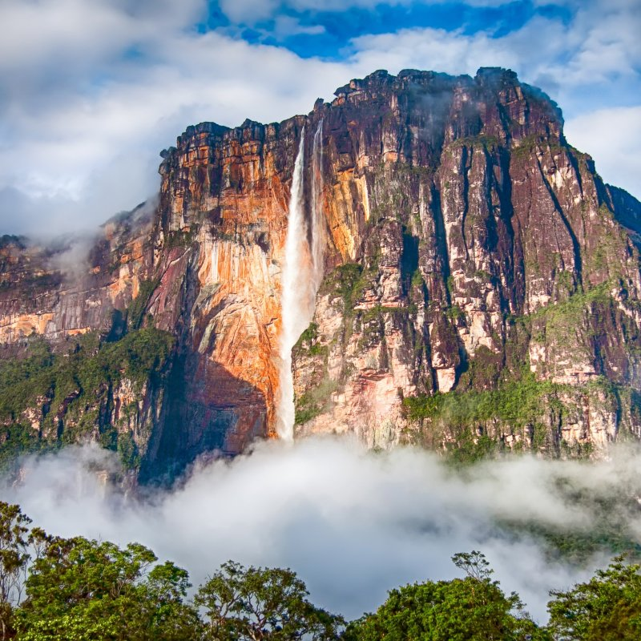

VENEZUELA'S WATERFALLS
Venezuela is home to the most spectacular waterfall on the face of the Earth. Cascading from the edge of an ancient tepui deep inside Canaima National Park, this is a place where nature has outdone itself so completely that standing before it feels less like a travel experience and more like a confrontation with something sacred. No other waterfall on Earth comes close to what Venezuela has to offer — and its name is known in every language on the planet.

Angel Falls — known in the indigenous Pemon language as Kerepakupai Merú, meaning "waterfall of the deepest place" — is the tallest uninterrupted waterfall in the world, plunging an astonishing 979 meters from the summit plateau of Auyán-tepui in Canaima National Park, Bolívar state. To put that height in perspective, Angel Falls is approximately 15 times the height of Niagara Falls, and so tall that the water largely atomizes into a shimmering curtain of mist long before it reaches the pool at the base — creating a perpetual rainbow haze that hovers around the falls and soaks everything within hundreds of meters in a cool, fine spray. The falls were first documented to the outside world by American aviator and adventurer Jimmie Angel in 1933, when he flew his small aircraft over the falls and reported their existence to an astonished world. In 2009, Venezuela officially renamed the falls to their Pemon indigenous name — Kerepakupai Merú — in recognition of the thousands of years the indigenous Pemon people had known, lived beside, and revered this extraordinary place long before any outsider ever laid eyes on it. Reaching Angel Falls is itself a journey of adventure that forms an inseparable part of the experience. Visitors fly by small propeller aircraft from Caracas or Ciudad Bolívar to the remote Canaima lagoon camp, where the turquoise Salto Hacha waterfall cascades directly into the lagoon. From Canaima, guides lead visitors by motorized dugout canoe up the Churún River, navigating rapids and sandbars through increasingly dense and ancient jungle, before reaching a trailhead from which a jungle trek of an hour or more leads to the base of the falls. The entire journey — the flight over the Gran Sabana, the canoe through the jungle, the trek through the forest, and finally the moment the falls emerge from the mist ahead — is one of the great adventure travel experiences anywhere in the world. The best time to visit Angel Falls is during the rainy season from May to November, when the Churún River is high enough to navigate and the falls are at their most powerful and dramatic. During the dry season, the flow reduces significantly, though the falls never disappear entirely and the clear skies offer better photographic conditions. Whether you arrive in the mist of the wet season or the clarity of the dry, Angel Falls delivers an encounter with natural grandeur that will remain with you for the rest of your life.